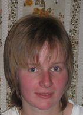

Богданова Ольга Александровна
Моя краткая биография:
Родилась 31 июля 1979 года в г. Ленинграде (Санкт-Петербург). Училась в физико-математической школе (гимназии) № 470.
В 1994 году, решая свои проблемы, попала в ЛОРНИИ Санкт-Петербурга, где мне было предложено подумать о выборе специальности, имеющей отношение к детям с проблемами речи. В 1996 году я поступила в Российский Государственный Педагогический Университет имени А.И.Герцена (СПбГПУ), на факультет коррекционной педагогики, а через два года, при выборе специализации, прошла распределение на отделение олигофренопедагогики. Осенью 1999 года, столкнувшись с необходимостью написания квалификационной работы, и заинтересовавшись проблемой детского аутизма, начала работать на базе центра восстановительного лечения (ЦВЛ) "Детская психиатрия". Параллельно получала специализацию в области помощи детям с нарушениями движения, стажировалась во Франции и в Португалии.
С 2001 года работала в ИВВИС-е, где под моим руководством был начат создаваться этот сайт.
В настоящее время, помимо консультирования на сайте, работаю в Федеральном Государственном учреждении "Санкт-Петербургский научно-практический центр медико-социальной экспертизы, протезирования и реабилитации инвалидов имени Г.А. Альбрехта" (СПбНЦЭПР им. Г. А. Альбрехта ) в отделе профессиональной и социальной реабилитации инвалидов.
Занимаюсь разработкой методических рекомендаций по социально-бытовой реабилитации детей нарушениями движений и разработкой сайта с он-лайн-консультированием, ну и консультирую на нашем сайте по мере поступления запросов.
Цель в жизни: не переходя на личные амбиции, а удерживая себя в рамках профессиональной деятельности - участие в создании того самого пресловутого портала, который позволил бы родителям ребенка-инвалида в одном месте получить всю необходимую информацию и полный спектр возможных он-лайн услуг по проблеме. И с аутизмом хочу работать в каком-нибудь реабилитационном центре толковом.
Пишите мне: